0840 Chat
0840 Chatのタイトル画面やタイムラインの画面を
元に作成しました！
ダークモードに対応したテーマも用意しました！
Ninty Launcherで利用できる自作カスタムテーマやアイコンです！
Ninty LauncherとはNinStarさんが開発したゲームランチャーソフトです。
Nintendo SwitchのようなUIが特徴的で、カスタマイズ性に優れています。
こちらからダウンロードすることができます。
0840 Chatのタイトル画面やタイムラインの画面を
元に作成しました！
ダークモードに対応したテーマも用意しました！

ワンダー状態をテーマにしました！
カーソルやテーマ色もカスタマイズしたので
見栄えがかなりいいと思います！

任天堂公式から配布されていた壁紙を元に作成しました！
文字色を見やすいように改善しました！
一応以前のバージョンも入ってます。

マリオギャラクシーのコースセレクト画面風テーマです！（映画公開記念！）
SMGで[青/紫/赤]の3色、SMG2で[紫/赤]の2色を用意しています！
それぞれBGMも再生されるようになってます！

Wiiのホーム画面を元にしたテーマです！
ダークモード（SDカード内）に対応したテーマも用意しました！
Wiiのホーム画面同様BGMも流れます！

WiiUのホーム画面を元にしたテーマです！
WiiUのホーム画面同様BGMも流れます！
実は分かりにくいですがWiiテーマとカーソルの色が違います！

Ninty Launcherに対応した0840 Chatのアイコンです！
アイコンがアニメーションするようになりました！